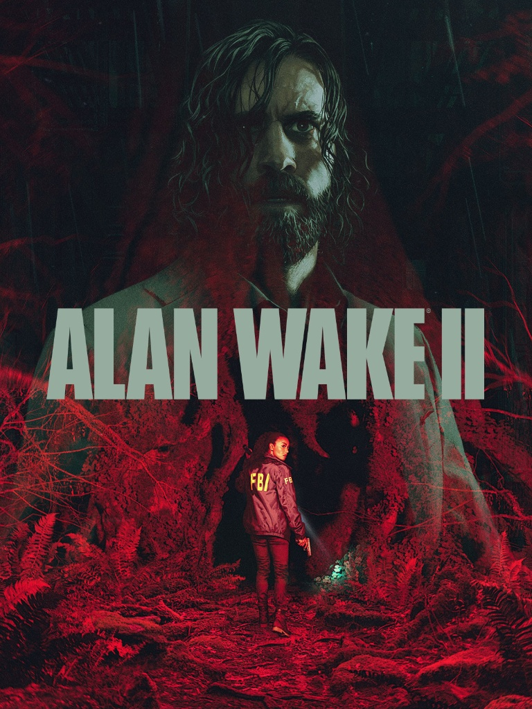
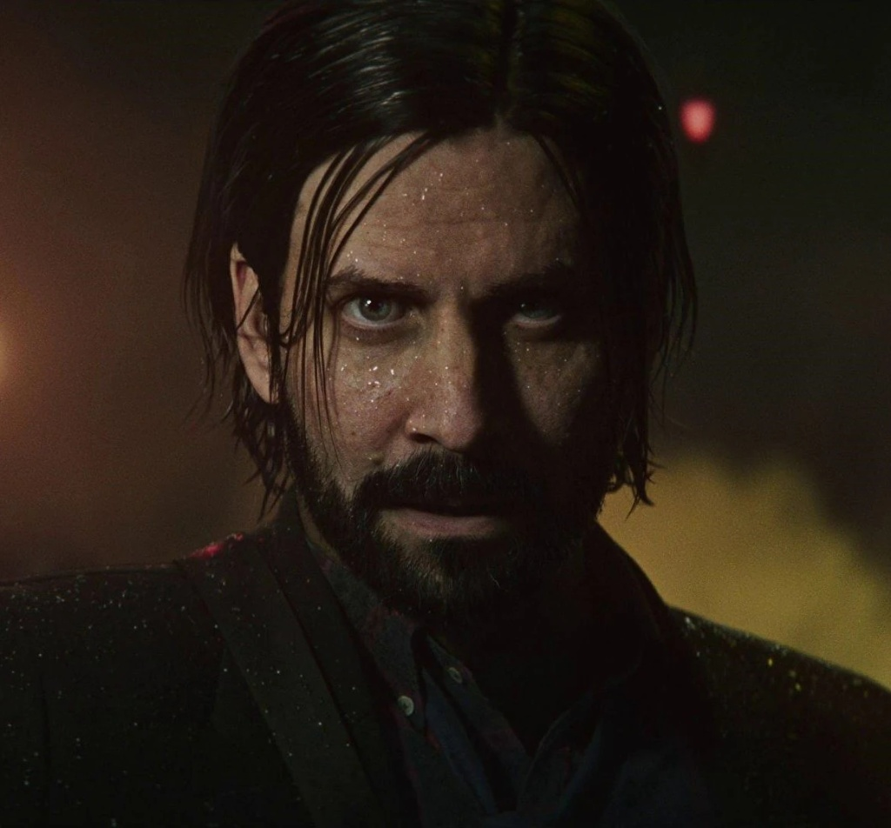

ALAN WAKE II
Dos realidades. Una pesadilla.

Una serie de asesinatos rituales amenaza Bright Falls, una pequeña comunidad rodeada de naturaleza en el noroeste del Pacífico. Saga Anderson, una agente del FBI con reputación de resolver casos imposibles, llega para investigar.
Mientras tanto, Alan Wake, un escritor atrapado en un lugar conocido como "el mundo oscuro", escribe una historia intentando moldear la realidad que lo rodea y escapar de este lugar.
Cada página del manuscrito encontrada en el bosque revela fragmentos de una historia de terror que parece reescribir la realidad en tiempo real alrededor de Cauldron Lake.
Explora la investigación completa haciendo clic en la imagen de abajo:
